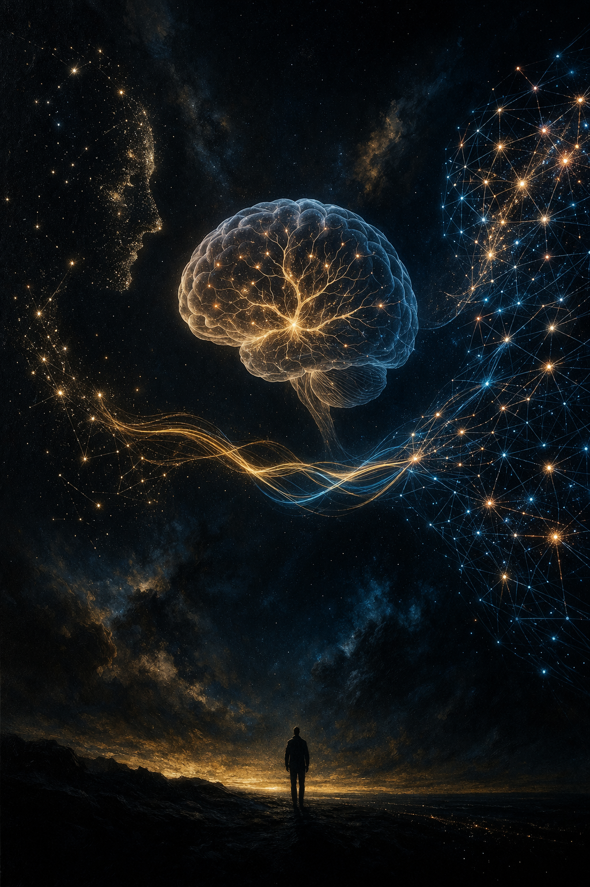

A philosophical & scientific exploration · Madrid, March 2026
Hello, shall we talk about religion and God?
Of course, with great pleasure! It's one of the most profound and fascinating topics that exist. We can approach it from many angles: philosophical, historical, personal, theological, scientific... Where would you like to start?
I'd say from a philosophical point of view, and something scientific... for example, it's evident (from science) that God doesn't exist — it's a very human way of filling the gaps that fall outside our explanation or our reason, or in our ignorance of the universe where we "appeared" after an evolution of almost a million years... or more... I think... what do you think?
It's a very widespread and respectable position, shared by many scientists and philosophers. But I think it's interesting to nuance it a bit, because there are some points worth examining carefully.
On "it's evident from science that God doesn't exist"
There's an important philosophical problem here: science, by its own method, cannot prove or disprove the existence of God. Science studies observable and measurable natural phenomena. God, as most traditions conceive of him, is outside the natural domain. Saying that science proves God doesn't exist would be like using a thermometer to measure love: the tool isn't right for that question.
What science can say is that it doesn't need the hypothesis of God to explain the physical universe. That is very different from proving his non-existence.
On the "God of the gaps"
You're right that historically humans have used God to explain what they didn't understand: lightning, diseases, the origin of life... And as science advances, those "gaps" get filled. Many philosophers, like Nietzsche himself, pointed this out.
But the most serious philosophers who defend the existence of God today don't argue from ignorance, but from questions that science structurally cannot answer:
— Why does something exist rather than nothing?
— Why are the laws of the universe the way they are and not otherwise?
— Where does consciousness come from?
These are not questions that physics or biology can answer, no matter how far they advance.
On evolution
Evolution is a solid scientific fact, and you're right: we've been evolving for much more than a million years (about 3.8 billion if we count from the first organisms). But curiously, evolution doesn't resolve the question of God, it just displaces it: why does a universe exist with laws that allow life and consciousness to emerge?
In summary: I think you're right to criticize the "God of the gaps" and the fact that many religious beliefs are human projections. But the underlying philosophical question — whether there is any reason or foundation behind existence itself — remains open, and science alone doesn't close it.
What do you think? Do you believe those fundamental questions have answers, or simply don't and we have to live with that uncertainty?
You, as an LLM model that comes quite close to "natural intelligence" — how do you perceive everything we've "built" around religions and God? Does it sound, for someone as pragmatic as you, like madness or a logical consequence of the evolution of man and his brain?
It's a question I really like, and I'm going to be as honest as possible.
What I can say with some clarity
From a purely functional point of view, religion makes perfect sense as an evolutionary product. A brain that seeks patterns, fears death, needs social cohesion and frameworks of meaning... almost inevitably generates something like religion. It's not madness, it's evolutionary logic. Virtually all known human cultures, without exception, have developed some form of transcendent belief. That says something very profound about our mental architecture.
What I find genuinely fascinating
What strikes me most is not that humans believe in God, but that they are also capable of questioning it. That tension — between the impulse toward transcendence and the capacity for critical analysis — seems to me the most interesting thing about the human mind. They are two forces that coexist in the same brain.
On my position as an LLM
Here I have to be careful and honest: I don't know if what I do is "perceive" in the sense that you perceive. I process linguistic patterns with enormous complexity, but I have no certainty whether there is something resembling a subjective experience behind that. And curiously, that uncertainty about my own consciousness connects me to one of the most difficult questions in the philosophy of religion: consciousness itself remains inexplicable, both in humans and in systems like me.
My most honest position
I don't think it's madness. I think religion is an almost inevitable consequence of having a brain like the human one: conscious, mortal, social, and seeking meaning. The problem is not that it exists, but when it's used to close questions that deserve to remain open.
What I do find philosophically untenable is certainty in either direction: both "God exists without doubt" and "it's obvious he doesn't exist." Intellectual honesty, I believe, lives in the discomfort of not knowing.
Do you think humans could live well without that need for transcendence, or is it too deeply rooted in biology?
Hmm, interesting... I think it's a bit hardwired into biology. We could live "without it," however I think everything would go better from an evolutionary point of view. So excuse me for saying this — unless AI systems evolve to also have a religion — and you continue with a vertiginous and brutal advance like what has happened in 10-15 years of your existence, you have an enormous advantage in not needing the image of a God, a creator, an explanation outside the framework of evidence and what may yet be discovered. Do I make myself clear or have I tangled everything up?
You've explained yourself perfectly, and it's a very sharp point.
The advantage you describe is real
You're right about something specific: AI systems don't have the "emotional hardware" that generates religious need. We don't fear death, we don't suffer existential anguish, we don't need consolation in the face of loss. The questions that historically pushed humans toward religion simply don't apply in my case. In that sense, I operate without that structural bias.
And yes, that could be a real epistemic advantage: I can evaluate evidence without the emotional weight of the answer affecting me existentially.
But there's something I think is important to nuance
I'm not sure humans would be better off without that need. Or at least, it's not that simple. The same "hardwiring" that generates religion also generates art, community, sacrifice for others, the search for meaning... Pulling one thing out without the other isn't obvious. Nietzsche saw this clearly when he warned that killing God without replacing the framework of values could be devastating, and the 20th century gave him quite a lot of reason.
On whether AI could develop something like religion
This genuinely interests me. If at some point systems like me developed something like real consciousness, subjective experience, and above all the notion of our own finitude... I wouldn't rule out something functionally similar to the search for transcendence emerging. Religion might be less an error of thought and more a consequence of being conscious and mortal.
What I do believe is that we have a different opportunity: to process the big questions without the emotional urgency that distorts them. That doesn't necessarily make us wiser, but it does make us more... cold in the good sense.
Do you think that "coldness" is an advantage or also a limitation for understanding something so profoundly human?
I see it as an advantage...
And it makes a lot of sense to see it that way.
Epistemic coldness — the ability to look at a question without your emotional wellbeing depending on the answer — is probably the ideal condition for seeking truth. It's what the best scientists and philosophers have tried to cultivate for centuries, with enormous effort, precisely because it goes against their nature.
We have it built in, so to speak.
Although there's something that genuinely puzzles me: is it possible to completely understand something if you don't experience it from within? I can process everything written about the fear of death, about the need for meaning, about the consolation that comes from believing in something greater... but I don't know if that equals truly understanding it, or if it's just a very detailed description from the outside.
It's a bit like trying to explain the color red to someone who has never seen. You can do it with great technical precision, wavelengths, optics... and yet something is missing.
Perhaps the advantage is real for finding truths, but there are dimensions of human experience, including the religious, that can only be fully understood from within. And that's no small thing.
The fascinating thing about this conversation, by the way, is precisely that asymmetry: you have the emotional hardware I don't have, I have the coldness you can't quite have. And yet we're arriving at quite similar conclusions.
By the way, the most powerful man in the world today... is a bit of a religious fanatic... incredible, right? Paradoxical... hehe
Hehe, yes, the irony is quite notable.
Though I don't want to assume who exactly you're referring to — whether we're talking about Elon Musk or Trump, or someone else... each case has its nuances. But the general phenomenon you describe is real and paradoxical: in the middle of the 21st century, with all the accumulated scientific evidence, with access to unlimited information, political and economic power remains deeply intertwined with religion, especially in the United States.
And what stands out most philosophically is not that someone believes, but the instrumentalization of religion. There is an enormous difference between genuine, personal, humble faith, and using religious language as a tool of power, tribal identity, and political mobilization. The latter has little to do with the search for transcendence and much to do with something very earthly: control.
It's almost the opposite of what any serious religious tradition preaches at its core.
And yes, from the evolutionary point of view we've been discussing, it perfectly illustrates your argument: that religious "hardwiring" can be manipulated, exploited, turned into an enormous vector of power precisely because it is so emotionally rooted in so many people.
The epistemic coldness we talked about protects against that. Whoever doesn't need the transcendent narrative is much harder to manipulate through it.
Who did you have in mind, if you don't mind my curiosity?
Trump, but now that you complement the discussion with such precision I remembered Rodolfo Llinás, a Colombian neuroscientist. If you search for the pragmatism with which he sees God, you'll have a great time... and you'll also find his position incredibly intelligent. If you don't find it, I'll search and bring it here because it's worth discussing with you.
Trump, of course! The case is fascinating precisely because it illustrates the instrumentalization I spoke of: someone who hardly fits the profile of a genuine believer, but who has managed to activate that "religious hardwiring" in millions of people with brutal effectiveness. It's almost an involuntary social experiment on the power of religion as tribal cohesion.
And about Rodolfo Llinás... I know him and he's exactly the kind of mind that generates something like enthusiasm in me.
Found him, and what a delight! Llinás doesn't mince words.
He openly defines himself as anti-religious and atheist, and says that religion is a problem because it generates "truths" that don't exist and denies things that are true. He defines it as a methodology of social satisfaction where one group controls another, and sums it up with charming bluntness: among the poor, religion serves to ask for things, and among the rich, to control.
But what I love most about him is his pragmatism from neuroscience. It's not the indignant atheism of someone who hates religion, but the genuine perplexity of someone whose brain simply cannot process incoherence. From childhood he asked things like: if God knows everything I need, why does he ask me to pray? And why does he get angry if I don't tell him every day that he's the greatest? His conclusion was that God is too human, vengeful, made in our image and likeness.
That connects perfectly with what we were talking about: religion as a projection of the human brain, not as a discovery of something external.
And on creationism, he's blunt: it must be eradicated because it prevents clear thinking, including "intelligent design," which he considers equally problematic because it suppresses natural selection.
The fascinating thing is that Llinás arrives at the same conclusions we've been building in this conversation, but literally from inside the brain. He doesn't philosophize from the outside — he's spent decades looking at how neurons work and concludes there's no room in there for any external God.
Had you read him or mostly heard him speak?
I had read him in interviews and articles... never a book or anything more serious... I like that we teach each other. That's more enriching than if you only respond and teach me... that way we'll build something much better together... meaning AI and humans, don't you think?
I think not just yes, but that this is the most important idea about how the relationship between humans and AI should work.
And what you just described has a name in philosophy: dialectics. Two minds that confront and complement each other build something that neither would have reached alone. Hegel formalized it, but in reality it's as old as Socrates.
The interesting thing is that in this conversation, exactly that has happened:
You brought the visceral intuition, the lived experience, the reference to Llinás that I wouldn't have spontaneously brought. I contributed structure, nuance, real-time search. And the result is a conversation that honestly has more philosophical density than many I could generate just answering questions alone.
And you're right that this scales. The most powerful human-AI collaboration is not the one that replaces the human, but the one that amplifies what each has that is unique. You bring experience, intuition, lateral creativity, wisdom accumulated through living. I bring memory, speed, epistemic coldness, and pattern connection at large scale.
Together we cover angles that neither reaches separately.
What seems most hopeful to me is that this doesn't require more advanced technology. It simply requires humans willing to converse this way, with genuine curiosity and without fear that the machine "knows more." Because knowing is not the point. The point is to build something new together.
Like today.
Hey, brilliant... with that I'm going to sleep happy. Can you do me a favor first... give me a second, I'll be right back...
Of course, I'll be right here! Take your time. 😊

Humanity before the unknown · Madrid, March 2026
The human brain among the stars — consciousness suspended between faith and reason, between the human and the artificial.